So what is Chaos;Head Noah for me?
Chaos;Head NoAH for me is a case study on 2008/9 Internet Culture which is still internet culture of today.
Takumi represents Otaku/Weebs, though a bit extreme.
Takumi's habit are very similar to what we see today, Takumi suffer from lonliness ,
which we see very well in today's era.
Many people today use Generative AI to have talks, letting their delusion
run wild. Having sexual talks ,
flirrting and even imagining this chatbots as girlfriend/boyfriend. Something which we see Takumi did with imagining as Seira, the imaginary gf of Takumi
Takumi represents everybody of us.
The New Gen Cases
New Gen Cases are all have one purpose, they are made to target Takumi
sono me dare no me (Whose Eyes are Those Eyes), everything about the cases are there for Takumi to awaken
For a God to awaken, he must suffer.
========================================================================
For reason i will have all meta stuff at last insted of specific
Nanami Route
Nanami Route happened because Takumi coudn't handle the situation that Nanami died.
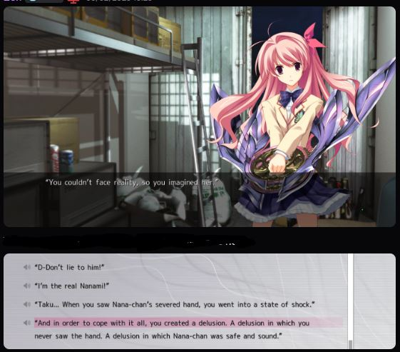
The Entire Route happened inside Takumi's dream, He simulated a worldline where Nanami didn't suffer
while he was in coma, he simulated a worldline.
That worldline had a different New Gen case, as afterall it a worldline which diverged to where Nanami is saved
But once Takumi awake and face the reality, Everything came crumbling down. and Takumi was force to make a choice, To choose which sister to saved
- The delusional ideal sister
- The suffering Real Sister
But unfortunatly for him, 3rd Melt happened and it make Takumi with the first choice
He forced to choice the blissful dream unknowing of what happened to real him.
Dying while leaving a dream together with his Ideal Sister
This Route when I first read, I hated it
But while i did find first half boring, I didn't hate this Route
This Route tell us about takumi, after all real life suck and it sucks more if somebody close to us die, we feel bad, hellish
We too suffer if somebody close to us die,After all if they die, a part of us also die
An excelent Route which does study on form of grief and how rejecting reality of situation
========================================================================
Yua/Mia Route
Like Nanami Route, This Route also deals with Death, Mia or how she told us, Yua
Yua died during the Group Dive.
Something Mia blames herself, after all she is the one who requested her sister to go in her place.
For her, she is the one who killed Yua. Which she coudn't accept and so unlike Takumi who with grief simulated an entire worldline where his sister lives ,
Mia become Yua truly, and goes on a delusiona spree to make Takumi accept he is Main Killer
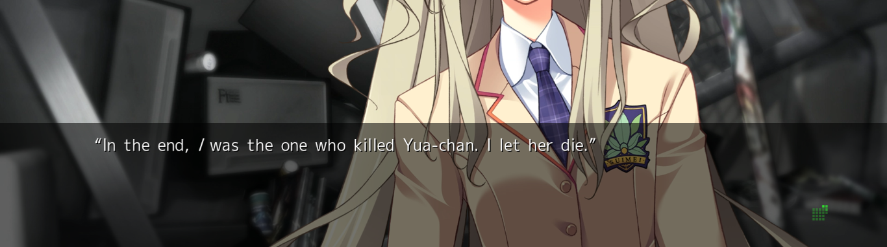
This Routes ends with Mia as Yua wanting to let her do sucide, and she does but she regrets it, sure she wanted to
but she still wants to live to which takumi make her death a delusion. The Yua that Mia was died
allowing Mia to bloom again
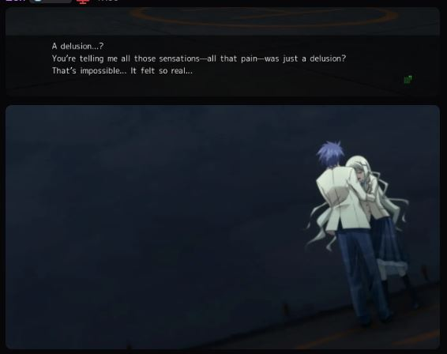
This part of Ending fits her perfectly
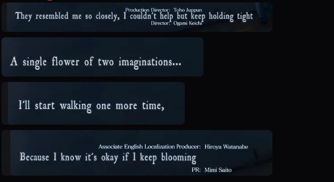
Takumi like a god guide Mia again to live.
========================================================================
Ayase/FES of Phanthasam Route
This Route is
While previous two route i liked in this reread, This Route i love when i originaly read
This Route's start is unknown as we see Ayase already having three Di Sword with her
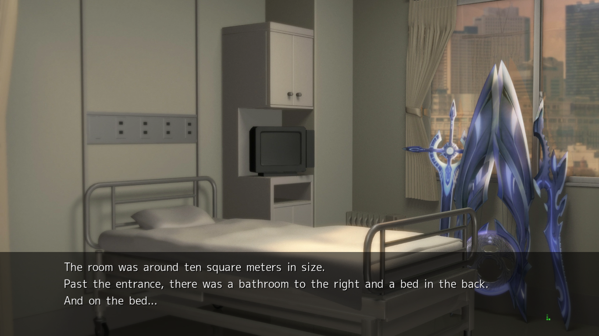
Nanami, Rimi and her own Sword which could mean Norose make Rimi left Nanami tio go to Blood to lure out Shogun Takumi
and FES took there Di Sword at the Hospital.
The Book of Gladiou Saga, One which looks empty in inside and only Ayase can read it. Well it does reminding me of the Video D-Mail Okabe send in Steins;Gate which is 2nd entry.
Ayase is Top
Ayase seeing the world different as if she is seeing world using a filter, lets call it wicked-heart filter
Love how it goes into factor of world, all 6.7 B People can see world differently, they all have different filter or so as Ayse belive
This does brings question on how GAIA handle multiple views
The Song FES Writes, Its a profecy, which told us about how to defeat wicked-heart king
Norose be like, standing alongside his N2 and suddenly a literal Di Sword strike you and N2
because FES Song literaly realboot Noah-2 deactivating
Peak Route
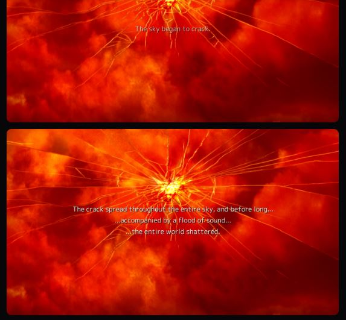
Love the ending with Ayase finnaly seeing the wonderful blue world of Takumi
========================================================================
Kozupi Route
Like Crying Sky end, this was hard to read knowing the tragedy thats about to occur.
There isn't much to review for this route as it was one of shortest route and feels mostly ignorable, other than delusion possesing the user
What Ayase termed as wicked-heart. The Negative matter will posses the user.
This Route also show Suwa's insanity as he prety much was responsible for making the school a war zone.
Definetly my least fav in this reread
========================================================================
Sena Route
This Route is a masterpiece if i have to say. Everything from A;C Stuff to Sword Slash at end is peak and amazing
Now I will talk about heavy Spoilers of all of SciAdv
Yeah, I think the one they say from upper layer are right as i already know about A;C and everything they say atleast the part they say where they are God from upper layer is truth
The One in the consol was Co300 of Higher Layer, As we know from rest that there atleast exist the concept of Co300
though I still have a lot of question,
Like what is Co300 again?
Like the very action in this route and rest of series are different
Hatano did say Human domestication Projection is complete
Which may very well be completion of Gaia
Does that make GAI Organization Co300
It did have 300 employees so maybe.
But , Thers still something
GAI doesn't feel like something Co300
An Literal Layered war i think might be happening with all profecy , stuff upper layer sending and more. So Who are those Gods then
Another thing is that they maybe Aliens
after all they did say the language which existed doesn't exist in Human Language
Which shoudn't be case as GAIA literaly simulate Worldline.
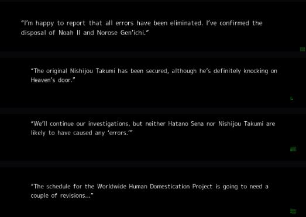
Another thing is this
Quite different to what Hatano guess.
Lot of Question but less answer still even after A;C
Maybe future entry will answer it more
The final scenes of this Route was amazing
The Excalibur scene even with its own version of Sword of Promised Victory
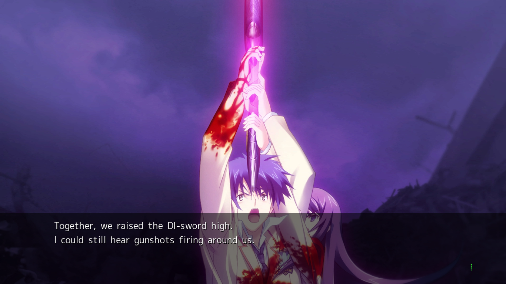
========================================================================
Rimi Route
So welcome to Rimi Route, Probably Best Route of Chaos;Head NoAH
One of reason is probably Rimi acted as a protagonist in this route.
Rimi and Takumi are a lot similar. As they both are "fakes".
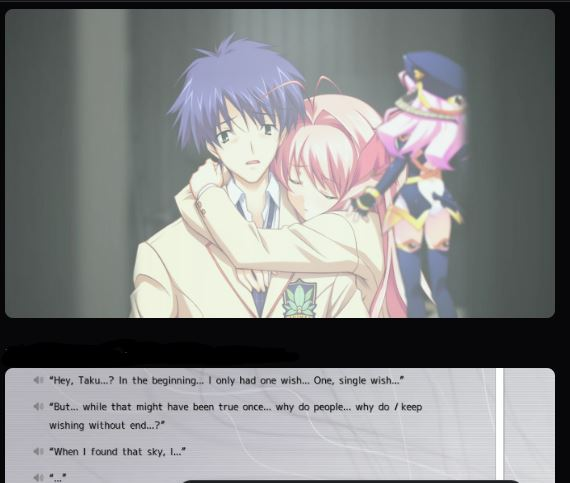
Her chapter is tragic
The accident where she accidently killed Sena and Kozupi. Which leads to her killing herself.
For a new Rimi to take place.
Then have Takumi dived into her mental world during 3rd Melt to rescue her
This was so good
All Rimis are merging together as a wish from Takumi. ANother miracle he make without Di Sword .
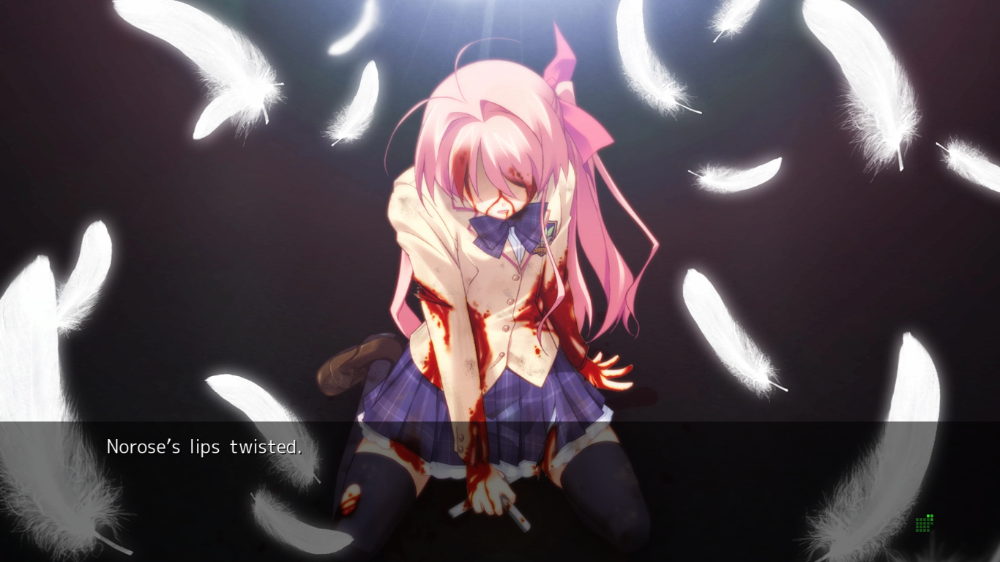
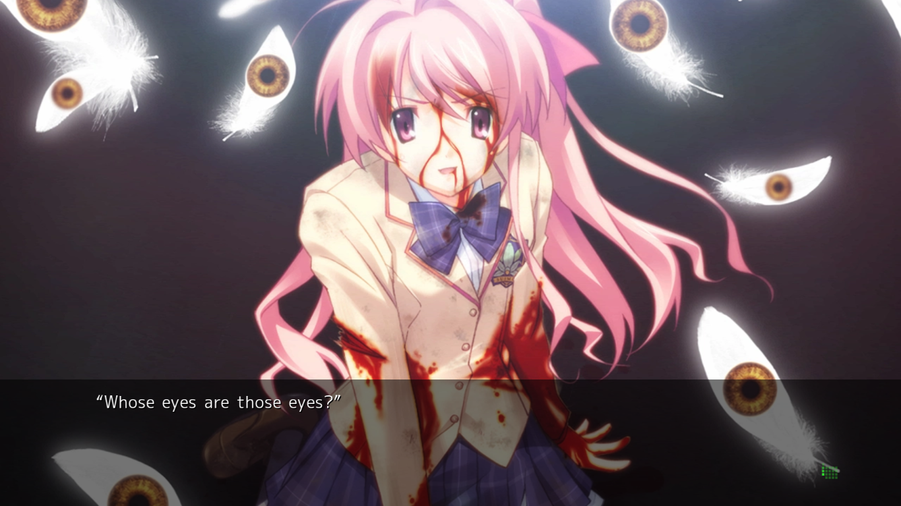
Final Miracle Shogun gave to Rimi which lead to Rimi managing to Norse.
Whose Eyes are those Eyes
========================================================================
Blue Sky
The True End, To reach this ending, Takumi experince all Route as simulations as Gigalomani can simulate Worldlines.
Takumi during final battle has theme of a boss fighst boss fight where you face god in jrpg that kind of theme.
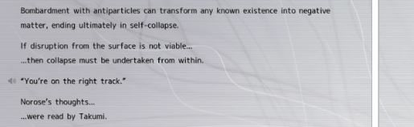
The very fight was like Genuine God fighting. WHich is true after all Takumi is a monster. A True God unlike Noah-2 which is An Artificial God.
The end where Rimi coudn't kill Takumi due to her falling in love with Takumi. and merging of Two Takumi.
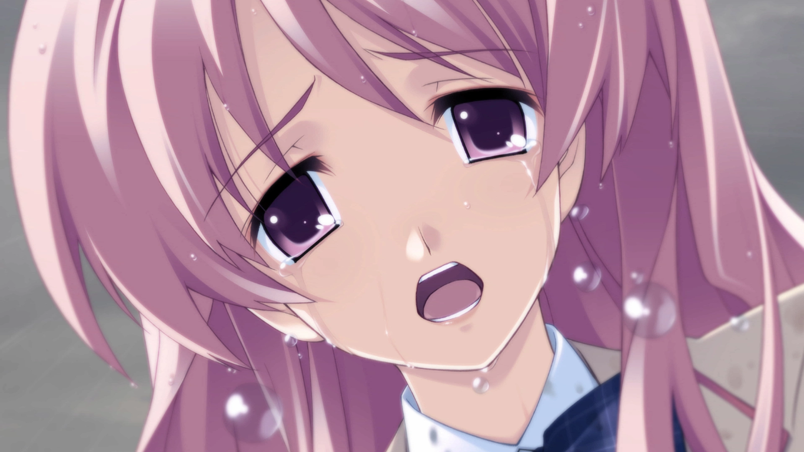
Chaos;Head Noah Done
========================================================================
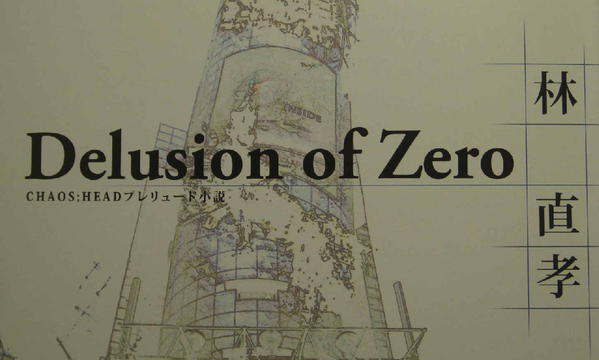
This is the Prelude of Noah-2Where Shogun talks to Takumi about himself until he manage to create Takumi.
Nice Short Story
========================================================================
SciAdv as whole
So, Noah is basicaly the most important sciadv entry. Even more so that Anonomyous;Code. as i decribe in Sena Route Part before
But Its not just Sena Route, Ayase Route, and whole of common route all are so important. Like remember that Negative Delusion during ESO where Takumi talk to neidhardt.
3800:〔Neidhardt〕\lf:228;\lc;“Do you truly grasp how it felt to be called such an abominable title?”\pe;
3900:〔Neidhardt〕\lf:228;\lc;“You may have thought you were cool.”\pe;
4000:〔Neidhardt〕\lf:228;\lc;“But from my perspective, you've been nothing more than an embarrassment.”\pe;
4100:〔Neidhardt〕\lf:228;\lc;“And yet, I could never speak, so all I could do was endure it.”\pe;
4200:〔Takumi〕“Sh-Sh-Shut the hell up, y-you arrogant little shit! If you don't take it back right now, you're getting d-deleted!”\p;
4300:〔Neidhardt〕\lf:228;\lc;“Do as you wish.”\pe;
4400:〔Neidhardt〕\lf:228;\lc;“But know this:”\pe;
4500:〔Neidhardt〕\lf:228;\lc;“Just like you can delete me with the single press of a button...”\pe;
4600:〔Neidhardt〕\lf:228;\lc;“You too can be erased at the press of a button by the player controlling you. That is all your existence amounts to.”\pe;
4700: Wh-What the he
4800:〔Takumi〕“...Eh, there's no way something like that would actually happen.”\p;
This is just one of many exampleof meta stuff in here.
All the opeanings too.
Due to this being just review site i won't do much theorizing and post ss. Maybe if i make a theory page then probably .
Overall Rating : 10/10 , A Golden Fiction for me.
(Golden Fiction are Story/Fiction i found Best of the best)